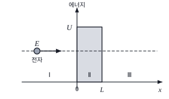

물리교육론 객관식 4문항 — 과학철학·POE 수업·2009 개정 「과학」·학생 가설Philosophy of science (Kuhn, Lakatos) · POE with simulation · 2009 integrated Science · student hypotheses
2012학년도 중등교사 임용시험 물리 1차(객관식) 1~4번 — 물리교육론 문항 묶음. 각 문항에서 알맞은 답을 고르시오.
- 과학 이론은 맞지 않는 관찰 하나로 바로 버려지지 않는다 — 과학자는 먼저 이론을 지키는 방법(보조 가설)을 찾는다.
- POE 수업: 결과를 먼저 예상하고, 관찰한 뒤, 예상과 다르면 그 까닭을 설명한다.
- 좋은 가설: ‘(조작 변인)이 클수록 (종속 변인)이 커질 것이다’처럼 두 변인의 관계로 쓴다.
다음은 수성 궤도의 근일점 이동과 관련된 과학사 사례이다.
(가) 뉴턴의 중력 이론으로 계산하였을 때, 태양 주위를 공전하는 수성 궤도의 근일점은 고정된 것이 아니라 다른 천체들의 영향에 의해서 움직이게 된다. (중략) 그러나 수성 궤도의 근일점이 이동하는 정도가 뉴턴의 이론과는 다르다는 것이 관측되었다. 뉴턴의 이론을 옹호하기 위해 몇 가지 시도가 있었다. 그 중 하나로 차이를 보정하는 ‘벌컨(Vulcan)’이라는 다른 행성을 가정하였으나, 그런 행성은 발견되지 않았다. 수성 궤도의 문제는 한동안 미해결된 문제로 남게 되었다.
(나) 아인슈타인은 일반상대성 이론을 통해서 질량을 가진 물체가 중력에 끌리듯이 빛이 태양과 같은 질량이 큰 물체의 중력에 의해서 끌려야 한다고 주장했다. 에딩턴은 아인슈타인의 상대성 이론에 따라 태양 근처에서 빛이 편향된다는 것을 증명하고자 했다. 에딩턴은 낮과 밤에 태양 근처의 별들이 어떻게 보이는지를 비교하려고 했고, 실제로 개기 일식이 일어나는 동안 실시한 관측을 통해서 아인슈타인의 이론을 확증할 수 있었다. 이러한 아인슈타인의 이론은 뉴턴의 중력 법칙으로 설명할 수 없었던 수성 궤도의 문제를 정량적이고 자연스러운 설명으로 해결할 수 있었다. 또한 아인슈타인의 이론은 많은 부가적인 것들을 예측할 수 있었다.
이에 대한 과학 철학적 설명으로 옳은 것만을 <보기>에서 있는 대로 고른 것은? [2.5점]
- ㄱ. (가)는 과학 이론이 변칙 사례에 의해 즉각적으로 폐기되는 것은 아니라는 것을 보여준다.
- ㄴ. 쿤(T. Kuhn)의 관점에 의하면, (가)에서 행성 ‘벌컨(Vulcan)’은 패러다임을 위협하는 변칙 사례가 나타났을 때 정상과학 안에서 해결해 나가기 위해서 도입된 것이다.
- ㄷ. 라카토스(I. Lakatos)의 이론에 의하면, (나)에서 아인슈타인의 이론은 전진적(progressive) 연구 프로그램의 사례에 해당된다.
- 변칙 사례가 나타났을 때 과학자들은 이론을 곧바로 버렸는가?
- 라카토스의 ‘전진적’ 연구 프로그램의 조건: 새로운 사실을 예측하고 그것이 확인되는가.
다음은 컴퓨터 시뮬레이션을 이용한 수업에 대한 것이다.
[학습 과제] 에너지가 \(E\,(\lt U)\)인 전자가 영역 Ⅰ에서 퍼텐셜 에너지가 \(U\)인 장벽이 있는 \(x\) 방향으로 운동할 때, 영역 Ⅲ에서 전자를 발견할 수 있을까?

[수업 과정]
- 학습 과제에서 컴퓨터 시뮬레이션의 결과를 예상하게 하였다.
- 학생들은 컴퓨터 시뮬레이션에서 \(E\)가 \(U\)보다 작아도 영역 Ⅲ에서 전자가 발견될 확률이 있다는 것을 관찰하였다.
- 관찰 결과를 예상과 관련지어 학생들이 설명하였다.
[학생들의 학습 과제에 대한 예상과 설명]
| 예상 | 결과 설명 | |
|---|---|---|
| 학생 A | 전자는 매우 작기 때문에 퍼텐셜 장벽을 통과하여 영역 Ⅲ에 모두 도달할 것이다. | 전자의 크기가 모두 다르기 때문에 전자들의 일부가 발견되었다. |
| 학생 B | 전자는 입자이고, \(E\)가 \(U\)보다 작으므로 영역 Ⅲ에 도달할 수 없을 것이다. | 전자가 입자라는 것은 확실하다. \(E\)가 \(U\)보다 작을 때, 영역 Ⅲ에서 발견된 것은 예외적인 현상이다. |
이 수업에 대한 설명으로 옳은 것만을 <보기>에서 있는 대로 고른 것은?
- ㄱ. 이 수업의 진행 순서는 POE 수업 모형의 단계와 순서가 일치한다.
- ㄴ. 학생 A는 보조 가설을 제시하여 자신의 주장을 정당화하였다.
- ㄷ. 학생 B가 올바른 개념을 갖게 하기 위해서 총알이 벽을 뚫고 통과하는 자료를 제시하는 것은 타당하다.
- 수업 과정 1·2·3을 POE의 세 단계에 대응시켜 보자.
- 학생 A는 ‘모두 도달’이라는 예상이 틀리자 무엇을 덧붙였나?
- 총알이 벽을 뚫는 것은 E > U(고전) 현상인가, 터널 효과인가?
2009 개정 과학과 교육과정의 고등학교 「과학」에 관한 설명으로 옳은 것만을 <보기>에서 있는 대로 고른 것은? [1.5점]
- ㄱ. ‘목표’에는 우주와 생명, 그리고 현대 문명과 사회를 이해하는 데 필요한 과학 개념을 통합적으로 이해하는 것이 포함되어 있다.
- ㄴ. ‘내용 체계’에서는 물리 및 화학 분야와 지구 과학 및 생명 과학 분야로 나누어, 제1부 ‘우주와 생명’에서는 지구 과학 및 생명 과학 분야를 다루고, 제2부 ‘과학과 문명’에서는 물리 및 화학 분야를 다루도록 하였다.
- ㄷ. ‘학습 지도 계획’에는 과학적 소양 함양을 위해 특정 내용이나 개념의 도입이 필요하다면 학생들의 선수 학습이 다소 부족하더라도 흥미를 느끼면서 이해할 수 있도록 이야기 형식 등으로 제시하는 것이 포함되어 있다.
- ㄹ. ‘평가의 주안점’으로 과학에 대한 흥미와 가치 인식, 과학 학습 참여의 적극성, 협동성, 과학적으로 문제를 해결하는 태도, 창의성 등을 평가하는 것이 포함되어 있다.
- 2009 개정 「과학」의 가장 큰 특징은 ‘융합(통합)형’이라는 점.
- 1부·2부가 분야별로 나뉘어 있다면 융합형이라 할 수 있을까?
다음은 전자기 유도에 관한 [탐구 문제]와 [학생들의 가설]이다.
[탐구 문제]
가. 솔레노이드에 전류가 흐르면 자기장이 생기며, 그 크기가 전류의 세기에 비례하는 것을 관찰하시오.
나. 솔레노이드에 자석을 넣고 뺄 때 전류가 유도되는 현상을 관찰하고, 발생한 유도 전류의 세기에 대한 가설을 세우고 그 이유를 설명하시오.
[학생들의 가설]
| 가설 | 이유 | |
|---|---|---|
| 학생 A | 자석의 속력이 클수록 솔레노이드에 유도되는 전류의 세기가 커질 것이다. | 솔레노이드에서 자석이 움직일 때만 전류가 흘렀다는 점에서 자석의 속력이 전류와 관련이 있을 것이다. |
| 학생 B | 자석의 세기가 셀수록 솔레노이드에 유도되는 전류의 세기가 커질 것이다. | 솔레노이드에서 발생하는 자기장의 크기는 전류의 세기에 비례하였다. 자석을 넣고 뺄 때 솔레노이드에 유도되는 전류의 세기가 자기장의 크기와 관련이 있을 것이다. |
학생들의 가설에 대한 설명으로 옳은 것만을 <보기>에서 있는 대로 고른 것은?
- ㄱ. 학생 A의 가설은 조작 변인과 종속 변인의 관계로 서술되어 있지 않다.
- ㄴ. 학생 B는 가설을 세우는 과정에서 귀추적 추론을 사용하였다.
- ㄷ. 학생 A의 가설과 학생 B의 가설은 서로 모순되므로 모두 참이 될 수는 없다.
- A의 가설에서 조작 변인과 종속 변인을 찾아보자.
- B는 [탐구 문제] 가의 결과(전류 → 자기장)를 어떻게 이용했나?
- 패러데이 법칙 \(\varepsilon=-N\,d\Phi/dt\)에서 속력과 자석 세기는 어떻게 들어가는가?